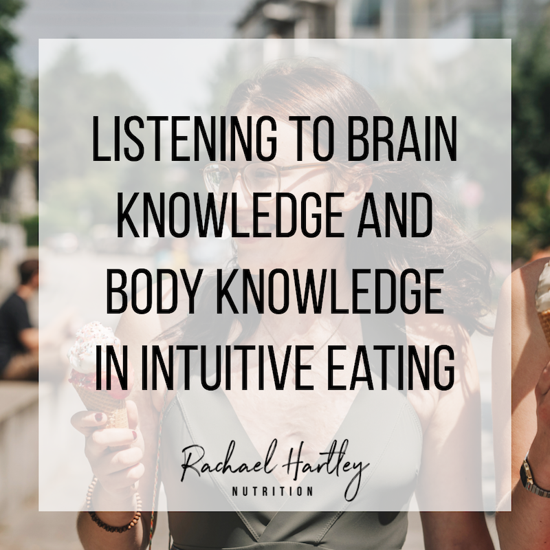
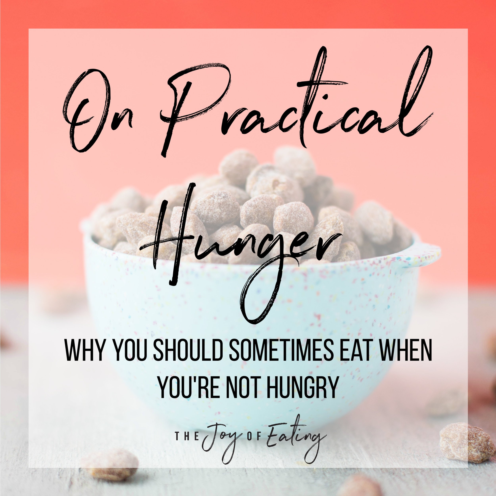

17 January, 2021
LISTENING TO YOUR BODY AND BRAIN KNOWLEDGE IN INTUITIVE EATING
Intuitive eating isn’t impulsive eating. This blog post explores how you can listen to your body and brain knowledge together in intuitive eating to make intentional choices with food that help you feel good physically and mentally.
Read More

17 January, 2021
PRACTICAL HUNGER IN INTUITIVE EATING: WHY IT'S OK TO EAT WHEN YOU'RE NOT HUNGRY
IIntuitive eating teaches you how to eat when you’re hungry and stop when satisfied, but it’s much more nuanced than that! Learn why it’s OK to eat when you’re not hungry in this post on the role of practical hunger in intuitive eating.
Read More
17 January, 2021
HOW COOKING CAN HELP YOU MAKE PEACE WITH FEAR FOODS
Need a new idea for making peace with your fear foods? Get in the kitchen and let your creativity shine! This post explores ways of making peace with fear foods through cooking.
Read More